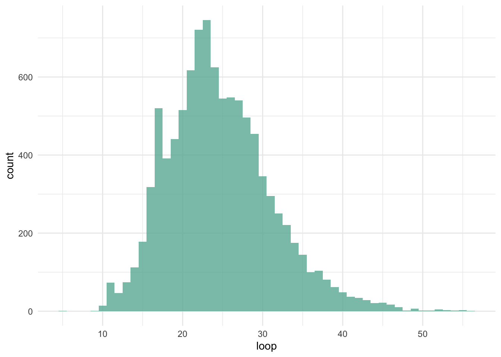
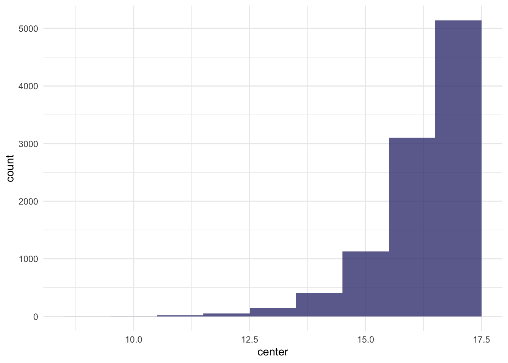
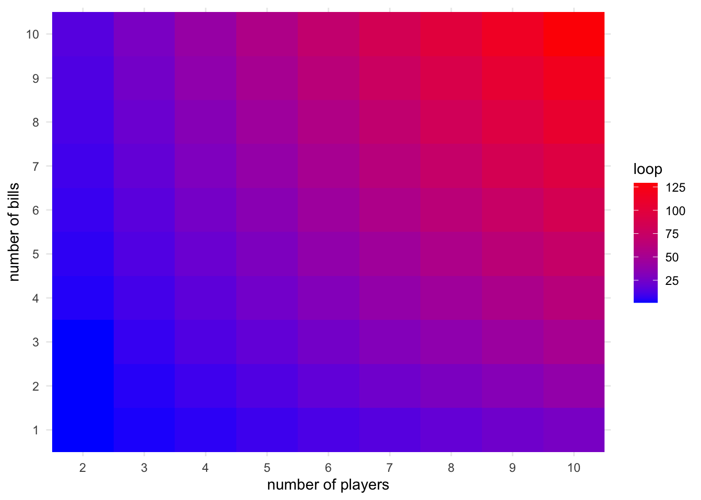
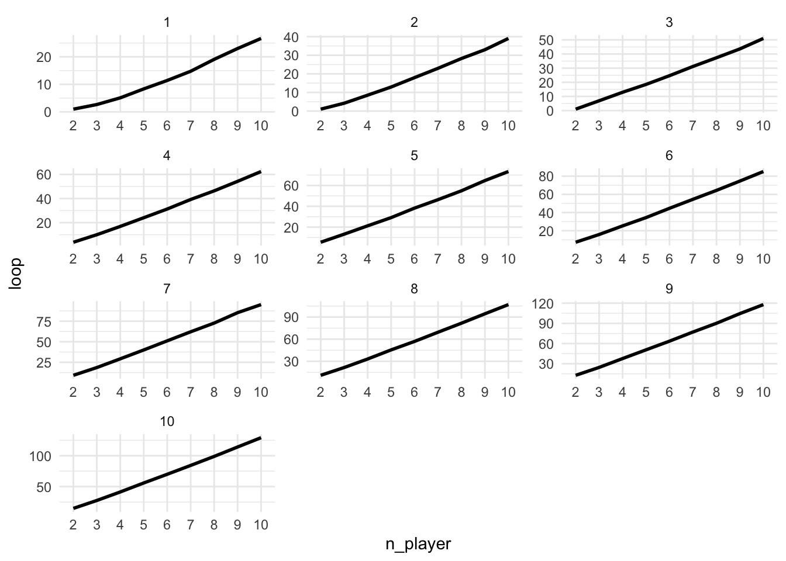
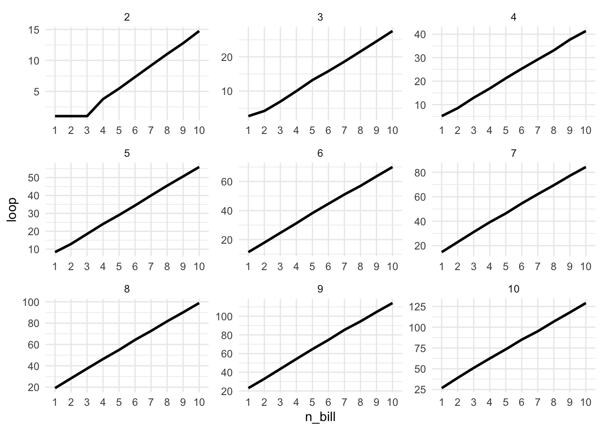
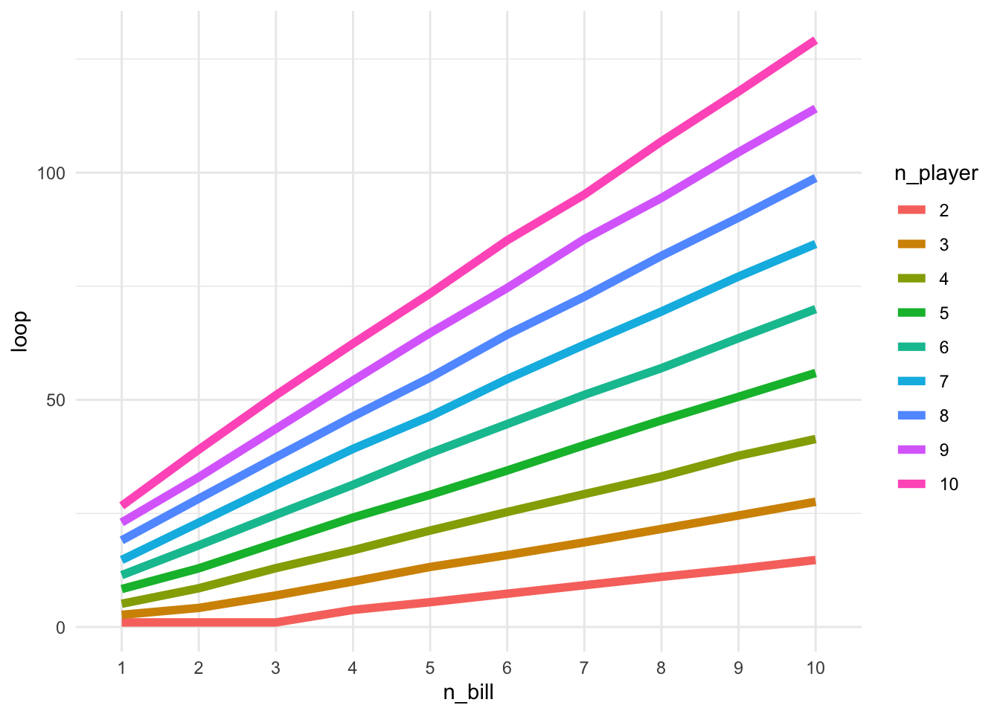
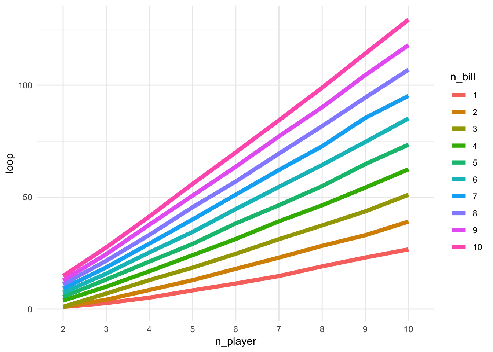

![]()
library(tidyverse)
library(purrr)
library(ggplot2)
library(knitr)
theme_set(theme_minimal())Consider a game of chance called left, right, center. Everyone sits in a circle and begins with some $1 bills. Taking turns, each pearson rolls three dice. For each die, if you roll a 1 or 2 you give a dollor to the pearson on your left, if you roll a 3 or 4 you give a dollar to the pearson on your right, and if you roll a 5 or 6 you put a dollar in the middle. The moment only a single person has any money left, the game ends and that person gets all the money in the center. How long is the game expected to last for six players each starting with three $1 bills? For X players each starting with Y $1 bills?
load packages
First, I created a function called left_right_center, which takes two arguments Y and X. Y represents the number of 1 dollar bill each player had in the begining of the game. X represents the number of players that participated in our game. The function returns a list with three elements. The first element loop represents how many turns we have to go until only a single person has some money left. The second element center represents the money in the center in the end of our game. The third element is a vector called player_vector, which is showing the situation of each player in the end of the game (the number of bill left for each player).
left_right_center <- function(Y, X) {
player_vector <- rep(Y, X)
center <- 0
loop <- 0
while (length(player_vector[player_vector == 0]) < X - 1) {
for (i in 1:X) {
if (length(player_vector[player_vector == 0]) >= X - 1) {
break
}
loop <- loop + 1
for (j in 1:3) {
if (player_vector[i] > 0) {
die <- sample(1:6, 1)
if (die %in% c(1, 2) & i == 1) {
player_vector[length(player_vector)] <- player_vector[length(player_vector)] + 1
}
if (die %in% c(3, 4) & i == length(player_vector)) {
player_vector[1] <- player_vector[1] + 1
}
if (die %in% c(1, 2) & i != 1) {
player_vector[i - 1] <- player_vector[i - 1] + 1
}
if (die %in% c(3, 4) & i != length(player_vector)) {
player_vector[i + 1] <- player_vector[i + 1] + 1
}
if (die %in% c(5, 6)) {
center <- center + 1
}
player_vector[i] <- player_vector[i] - 1
}
if (player_vector[i] == 0) {
break
}
}
}
}
list(loop = loop, center = center, player_vector = player_vector)
}How long is the game expected to last for six players each starting with three $1 bills? To answer this question, I need to set the function arguement Y = 3 and X = 6. I set the iteration number to 10,000. I created two containers to collect two elements produced by function left_right_center through these 10,000 iterations.
set.seed(2020)
itr <- 10000
loop_holder <- rep(NA, itr)
center_holder <- rep(NA, itr)
for (i in c(1:itr)) {
loop_holder[i] <- left_right_center(3, 6)$loop
center_holder[i] <- left_right_center(3, 6)$center
}Time to visualize these containers. As we can see from these visualization, the number of turns is quite normally distributed. There are more turns with larger number of bills left on the center.
df <- data.frame(loop = loop_holder, center = center_holder)
df %>% ggplot(aes(x = loop)) +
geom_histogram(fill = "#69b3a2", alpha = 0.8, binwidth = 1)
df %>% ggplot(aes(x = center)) +
geom_histogram(fill = "#404080", alpha = 0.8, binwidth = 1)
The average number of turns among these 10,000 iterations is 24.63.
mean(df$loop)[1] 24.6261# 24.63How long is the X players each starting with Y $1 bills?
I create a simple function which takes two arguments a and b. a represents the number of bills per person and b represents the number of players. I put left_right_center function created previously inside this simple function. Then I did two for loop to check mean loops from each possible combination between an a within 1 and 10, and a b within 2 and 10. I did 1000 iteration for each combination.
set.seed(2020)
simple_function <- function(a, b) {
itr <- 1000
loop_holder <- rep(NA, itr)
for (i in c(1:itr)) {
loop_holder[i] <- left_right_center(a, b)$loop
}
data.frame(n_bill = a, n_player = b, loop = mean(loop_holder))
}
mylist <- list()
for (a in c(1:10)) {
mylist[[a]] <- c(2:10) %>% map_dfr(~ simple_function(a, .))
}
my_df <- mylist %>% bind_rows()
write.csv(my_df, "my_df.csv")Time to visualize the results. First, I created a heatmap with number of players on x-axis, and number of bills on y-axis and each block was colored by the number of turns. The higher the number of turn is, the color is more red, whereas the lower the number of turn is, the color is more blue. I also created two line graphs with each showing several panels. The first line graph is showing the the number of turns agains the number of playwers which each panel showing different numbers of bills per person. As we can see, the number of turns is increasing constantly with the increased number of players and the larger the number of bills per person, more straight the line looks like to be. The second line graph is showing the number of turns agins the number of bills person with each panel showing different numbers of players. As we can see, for two players with no more than three bills per person, the number of turns seems to be the same. Other than that, thhe number of turns is increasing constantly with the increased number of bills per person. As we plot these panels togethor on a same line graph, we can see that the magnitude of the correlation between number of bills and turns is getting stronger with the increased number of players. Similarly, the magnitude of the correlation between number of players and turns is getting stronger with the increased number of bills.
my_df <- read.csv("./my_df.csv") %>% select(-"X")
my_df %>% ggplot(aes(as.factor(n_player), as.factor(n_bill), fill = loop)) +
geom_tile() +
xlab("number of players") +
ylab("number of bills") +
scale_fill_gradient(low = "blue", high = "red")
my_df <- my_df %>% mutate(n_player = as.factor(n_player), n_bill = as.factor(n_bill))
my_df %>% ggplot(aes(x = n_player, y = loop, group = 1)) +
geom_line(size = 1) +
facet_wrap(~n_bill, scale = "free", ncol = 3)
my_df %>% ggplot(aes(x = n_bill, y = loop, group = 1)) +
geom_line(size = 1) +
facet_wrap(~n_player, scale = "free", ncol = 3)
my_df %>% ggplot(aes(x = n_bill, y = loop, group = n_player)) +
geom_line(aes(color = n_player), size = 2)
my_df %>% ggplot(aes(x = n_player, y = loop, group = n_bill)) +
geom_line(aes(color = n_bill), size = 2)
Reuse
Citation
BibTeX citation:
@online{xu2020,
author = {Keren Xu},
editor = {},
title = {A {Riddler} {Problem}},
date = {2020-05-01},
url = {https://xukeren.github.io//posts/2020-05-01-a-riddler-problem},
langid = {en}
}
For attribution, please cite this work as:
Keren Xu. 2020. “A Riddler Problem.” May 1, 2020. https://xukeren.github.io//posts/2020-05-01-a-riddler-problem.